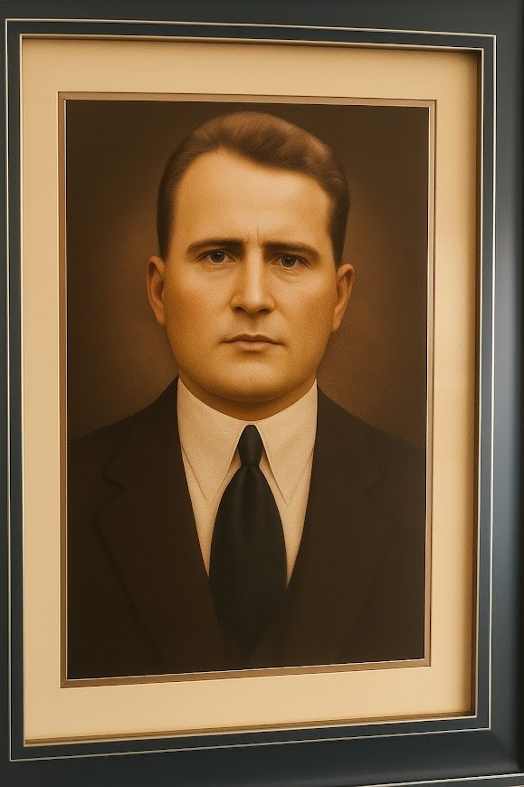

Árbol Genealógico Familiar
Representación visual de nuestras raíces extraída de los archivos históricos.

Archivo histórico de la familia Scappini Bernuzzi.
Un homenaje a quienes cruzaron el océano para construir un nuevo futuro.
Nuestra historia comienza con Vincenzo Giuseppe Scappini (nacido el 25 de enero de 1842) y Elizabetta Bernuzzi (nacida el 5 de marzo de 1853). Se casaron el 25 de enero de 1875; él tenía 33 años y ella 22. Vincenzo era oriundo de San Martino Del Lago (era uno de 7 hermanos) y Elizabetta de Scandolara Rabara (una de 5 hermanos).
Huyendo de la gran hambruna que azotaba Europa, el matrimonio, junto a parientes y vecinos, abordó las grandes barcazas enviadas por el Imperio Brasileño. En América, los esclavos africanos se habían sublevado, y el Imperio necesitaba mano de obra. Los inmigrantes llegaron con la promesa de trabajar en grandes cafetales y en la colección de corchos.
Desembarcaron en Río Grande do Sul (Brasil). Fue allí donde sus apellidos fueron registrados tal como los oía el oficial, ya que los campesinos solo hablaban dialectos italianos. Por descontento con las condiciones, muchos italianos se desplazaron hacia distintos territorios. Nuestros antepasados siguieron caminos hasta llegar a Encarnación, cruzaron el caudaloso río Paraná y, siguiendo las vías del tren, se establecieron finalmente en Yegros, Paraguay.
Vincenzo y Elizabetta tuvieron 8 hijos vivos. El único que nació en Italia fue el mayor, Pablo.
Haz clic en cada tarjeta para ver su información.
Scappini González
Cortessi Scappini
Scappini Valdez
Rienzzi Scappini
Scappini Scurra & Larrosa
Scappini Sarubbi
Scappini Rodríguez
Núñez Scappini
Representación visual de nuestras raíces extraída de los archivos históricos.

Nacimiento: 1879 (Italia) | Fallecimiento: 1962
Cónyuge: Escolástica González
Hijos: 12 hijos vivos (Rama Scappini González).
[Escribe la historia de Pablo]

Cónyuge: José Cortessi
Hijos: 7 hijos vivos (Rama Cortessi Scappini).
[Escribe la historia de Rosa]

Cónyuge: Anselma Valdez
Lugar: Foz de Iguazú (Brasil)
Descendencia: Todos sus descendientes llevan el apellido Scappini.
[Escribe la historia de Juan]

Cónyuge: Teresa Sarubbi Spaltra
Hijos: Tuvieron 7 hijos vivos.
[Escribe la historia de Marcelo como padre de familia]